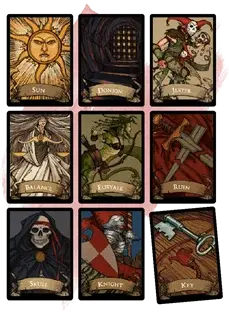

Колода многих вещей
Deck of Many Things
Чудесный предмет, легендарный

Рекомендованная стоимость от 50 001 зм
Эта колода, находящаяся в коробке или мешочке, состоит из карт, сделанных из слоновой кости или пергамента. Большинство (75%) этих колод содержат только тринадцать карт, но остальные включают двадцать две.
Перед тем, как тянуть карты, вы должны объявить, сколько собираетесь брать, а затем тяните их по одной (можете использовать модифицированную колоду обычных игральных карт). Карты, взятые сверх названного числа, не будут иметь эффекта. Как только вы вытянули карту, её магия начинает действовать. Вы должны тянуть следующую карту не позднее, чем через час после предыдущей. Если вы не вытянули названное число карт, оставшиеся сами вылетают из колоды и вступают в силу одновременно. Как только карта вытягивается, она исчезает. Если это не Дурак, и не Шут, карта вновь появляется в колоде, что позволяет вытянуть её повторно.
ВЫТЯНУТЬ КАРТУ ИЗ МАЛОЙ КОЛОДЫ
ВЫТЯНУТЬ КАРТУ ИЗ ПОЛНОЙ КОЛОДЫ
| Игральная карта | Карта |
| Туз бубен | Визирь* |
| Король бубен | Солнце |
| Дама бубен | Луна |
| Валет бубен | Звезда |
| Двойка бубен | Комета* |
| Туз червей | Судьба* |
| Король червей | Трон |
| Дама червей | Ключ |
| Валет червей | Рыцарь |
| Двойка червей | Драгоценность* |
| Туз треф | Когти* |
| Король треф | Пустота |
| Дама треф | Огонь |
| Валет треф | Череп |
| Двойка треф | Юродивый* |
| Туз пик | Тюрьма* |
| Король пик | Руины |
| Дама пик | Эвриала |
| Валет пик | Плут |
| Двойка пик | Равновесие* |
| Джокер (со знаком) | Дурак* |
| Джокер (без знака) | Шут |
* Только в колоде из 22 карт
Визирь. В любой момент в течение года, после того как вы вытянули эту карту, вы можете заняться медитацией и задать вопрос, чтобы получить мысленный правдивый ответ. Кроме простой информации ответ может помочь вам решить головоломку или другую дилемму. Другими словами, приходит не только знание, но и мудрость, позволяющая этим знанием распорядиться.
Драгоценность. Двадцать пять ювелирных украшений стоимостью 2000 зм каждое или пятьдесят драгоценных камней стоимостью 1000 зм каждый появляются у ваших ног.
Дурак. Вы теряете 10000 опыта, сбрасываете эту карту и вытягиваете из колоды новую, считая их вместе за одну в объявленном вами количестве вытягиваемых карт. Если потеря этого опыта заставила бы вас потерять уровень, вы вместо этого теряете такое количество, которое оставляет вас только с достигнутым уровнем.
Звезда. Увеличьте одну из ваших характеристик на 2. Новое значение может превысить 20, но не должно превышать 24.
Ключ. В ваших руках появляется волшебное оружие с редкостью как минимум «редкое», навыком владения которым вы обладаете (по выбору Мастера).
Когти. Все магические предметы, которые вы несёте и носите, распадаются. Ваши артефакты не уничтожаются, но исчезают.
Комета. Если вы в одиночку побеждаете следующее встретившееся вам враждебное чудовище или группу чудовищ, вы получаете достаточно опыта, чтобы получить следующий уровень. В противном случае эта карта не оказывает никакого эффекта.
Луна. Вы получаете возможность 1к3 раза наложить заклинание исполнение желаний [wish].
Огонь. Могущественный дьявол становится вашим врагом. Он стремится вас уничтожить, смакуя ваши страдания перед попыткой убить вас. Эта вражда длится до вашей или его гибели.
Плут. ПМ по выбору Мастера становится враждебным по отношению к вам. Его личность вам не известна до тех пор, пока он сам или кто-либо ещё не проявит это. Остановить эту вражду сможет как минимум заклинание исполнение желаний [wish] или божественное вмешательство.
Пустота. Эта чёрная карта предсказывает катастрофу. Ваша душа вырывается из тела и заключается в некоем предмете в месте, выбранном Мастером. Это место охраняет сильное создание или даже группа таких созданий. Пока ваша душа похищена, ваше тело недееспособно. Заклинание исполнение желаний [wish] не может вернуть вашу душу, но раскрывает местонахождение предмета, вмещающего вашу душу. Вы больше не тянете карты.
Равновесие. Ваше сознание претерпевает мучительные изменения, заставляя ваше мировоззрение измениться. Законное становится хаотичным, доброе становится злым, и наоборот. Если у вас истинно нейтральное мировоззрение или у вас нет мировоззрения, эта карта не оказывает никакого эффекта.
Руины. Вы теряете все богатства, которые вы носите или которыми владеете, кроме волшебных предметов. Движимое имущество исчезает. Бизнес, строения и земли, которыми вы владели, пропадают таким способом, который оказывает наименьшее влияние на действительность. Любые документы, подтверждающие ваши права собственности на утерянное имущество, тоже исчезают.
Рыцарь. Вы получаете на службу воина 4-го уровня, который появляется в пределах 30 футов от вас (по вашему выбору). Воин той же расы, что и вы, и будет верно служить вам до смерти, полагая, что судьба привела его к вам. Этим персонажем управляете вы.
Солнце. Вы получаете 50000 опыта и в ваших руках появляется чудесный предмет (на выбор Мастера).
Судьба. Ткань реальности разворачивается и складывается вновь, позволяя вам избежать или стереть один случай, как будто его никогда не было. Вы можете использовать магию карты сразу, как только вытянете её, или в любое другое время, пока не умрёте.
Трон. Вы получаете владение навыком Убеждение и удваиваете бонус мастерства при проверках этого навыка. Кроме того, вы получаете право владения небольшой цитаделью где-то в мире. Однако сейчас эта крепость занята чудовищами, которых предстоит уничтожить, чтобы объявить цитадель своей.
Тюрьма. Вы исчезаете и оказываетесь в состоянии приостановленной жизнедеятельности в межпространственной сфере. Все вещи, которые были у вас или на вас, остаются в том месте, где вы были до исчезновения. Вы остаётесь заключёнными в эту тюрьму до тех пор, пока не будете найдены и освобождены. Вы не можете быть обнаружены с помощью школы Прорицания, но заклинание исполнение желаний [wish] способно определить ваше местонахождение. Вы больше не тянете карты.
Череп. Вы вызываете образ смерти [avatar of death] — призрачного гуманоидного скелета, одетого в изодранную чёрную одежду и вооружённого призрачной косой. Он появляется в пределах 10 футов от вас (в месте по выбору Мастера) и нападает на вас, предупреждая всех, что вы должны выиграть это сражение в одиночку. Образ смерти сражается до тех пор, пока вы не погибнете, или его хиты не опустятся до 0. После этого он исчезает. Если кто-нибудь попытается помочь вам, он вызовет этим собственный образ смерти. Существо, убитое образом смерти, не может быть возвращено к жизни.
Шут. Вы получаете 10000 опыта или можете вытянуть две карты в дополнение к заявленному ранее количеству карт.
Эвриала. Напоминающий медузу образ на карте проклинает вас. Вы получаете штраф −2 к спасброскам, пока на вас лежит это проклятье. Только бог или магия карты Судьба может закончить действие этого проклятья.
Юродивый. Уменьшите ваш Интеллект на 1к4 + 1 (но не ниже 1). Вы можете вытянуть дополнительно ещё одну карту сверх заявленного ранее количества.
Проблема вражды
Две карты в колоде многих вещей могут сделать персонажа врагом другого создания. С картой Огонь вражда явная. Дьявол будет противостоять персонажу в многочисленных случаях. Поиск исчадия не должен быть простой задачей, и искатель приключений должен несколько раз столкнуться с союзниками и последователями дьявола, прежде чем сможет сразиться с ним самим.
В случае карты Плут вражда будет тайной, она будет проистекать от кого-то, кажущегося другом или союзником. Вы, как Мастер, должны ждать соответствующего драматического момента, чтобы показать эту вражду, заставляя персонажа гадать, кто же станет предателем